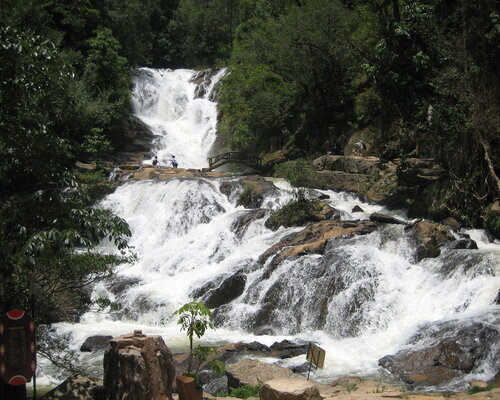

Thác Datanla - điểm đến hấp dẫn của Đà Lạt
Chào mừng độc giả đến với blog của chúng tôi! Hôm nay, chúng ta sẽ cùng nhau khám phá một điểm đến tuyệt vời tại Việt Nam - Thác Datanla. Thác Datanla nằm trong khu du lịch Đà Lạt, một thành phố xinh đẹp được biết đến với khí hậu mát mẻ, cảnh đẹp hữu tình và những điểm du lịch tuyệt vời. Thác nước Datanla không chỉ là một trong những địa điểm du lịch nổi tiếng ở Đà Lạt mà còn là một kỳ quan thiên nhiên tuyệt vời đầy ấn tượng. Với chiều cao khoảng 20 mét và nằm giữa rừng núi xanh ngắt, Thác Datanla là điểm đến lý tưởng cho những ai muốn trải nghiệm không khí tươi mới của thiên nhiên và cảm nhận vẻ đẹp hùng vĩ của nước chảy. Đặc biệt, thác nước này được biết đến với sự kết hợp hài hòa giữa cảnh đẹp tự nhiên và những dịch vụ giải trí độc đáo.
Để đến Thác Datanla, bạn có thể chọn cách leo lên bằng đường dây cáp treo, một hình thức trải nghiệm thú vị mà không phải ai cũng có cơ hội trải qua. Trên đường đi, du khách sẽ được thưởng thức khung cảnh hùng vĩ của rừng núi xanh biếc và cảm nhận sự hồn nhiên của thiên nhiên. Ngoài ra, tại Thác Datanla, du khách còn có cơ hội thưởng thức những món ăn đặc sản của địa phương tại các quán nhỏ xinh bên đường. Điều này không chỉ là cơ hội để trải nghiệm ẩm thực độc đáo mà còn là dịp để tận hưởng không khí ấm áp và thân thiện của người dân địa phương. Nếu bạn là người yêu thích phiêu lưu và muốn khám phá vẻ đẹp tự nhiên tại Việt Nam, Thác Datanla chắc chắn là một điểm đến không thể bỏ qua. Hãy cùng chúng tôi đặt chân đến nơi này để trải nghiệm những khoảnh khắc tuyệt vời và lưu giữ những kỷ niệm đáng nhớ tại thiên đường Đà Lạt!